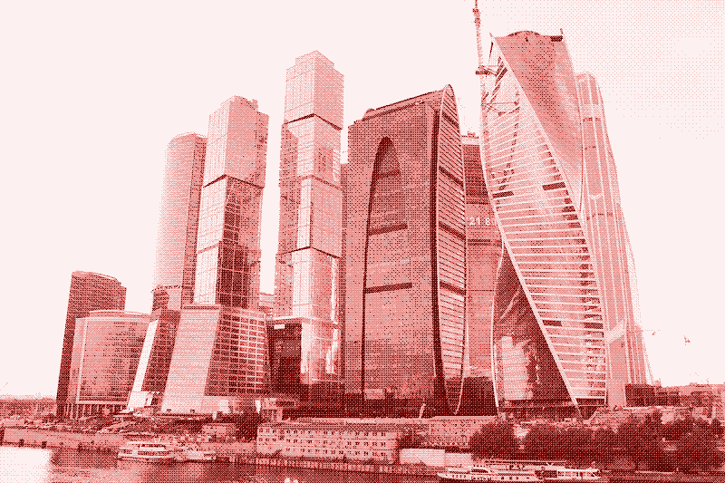
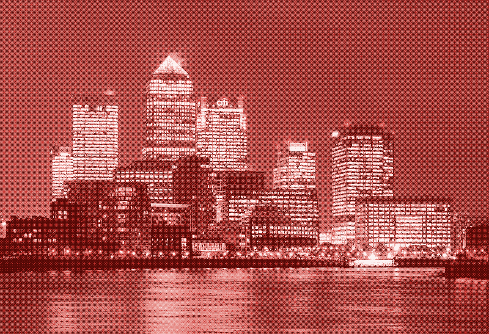
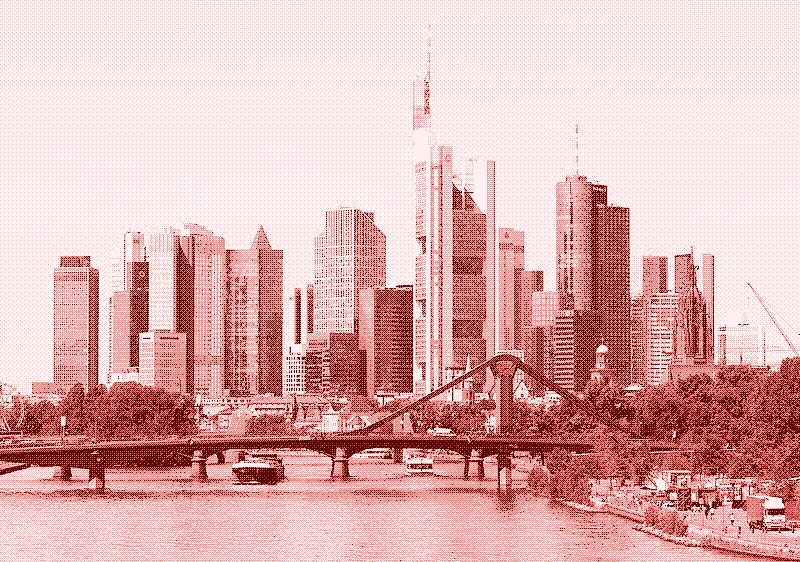
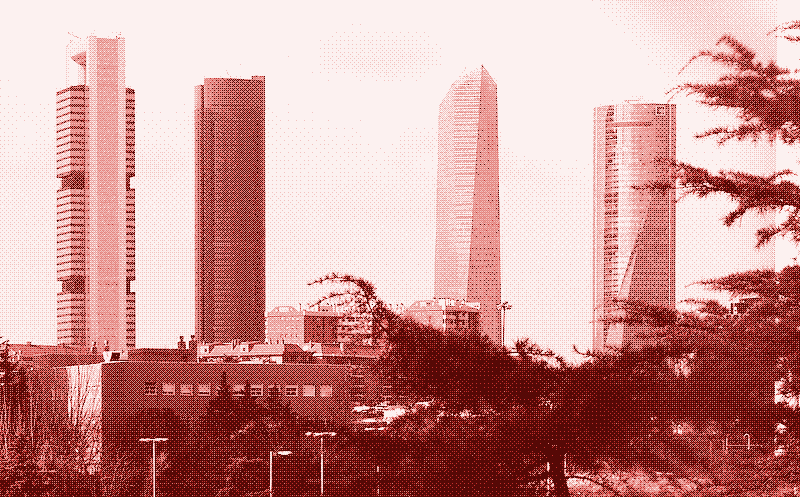

The information society promises to dematerialise society and make it more sustainable, but modern office and knowledge work has itself become a large and rapidly growing consumer of energy and other resources
Welcome to the Office
These days, it’s rather easy to define an “office worker”: it’s someone who sits in front of a computer screen for most of the working day, often in a space where others are doing the same, but sometimes alone in a “home office” or with a few others in a “shared office”. In earlier times, many office workers were used not for their knowledge or intelligence, but for the mere objective capacity of their brains to store and process information. For example, “computers” were office workers who made endless calculations with the help of mechanical calculating machines. This category of office workers has become comparatively less important, because inanimate computers have taken over many of their jobs. Most office workers — so-called “knowledge workers” — are now paid to actually think and be creative.
There’s a big chance that you are one of them. Roughly 70% of those in employment in industrial nations now have office jobs. The share of office workers in the total workforce has increased continuously throughout the twentieth century. For example, in the USA, the information sector employed 13% of workers in 1900, about 40% of workers in 1950, and more than 60% of workers in 2000. 12 The spectacular and so far unstoppable growth in the number of office workers is believed to have led to a so-called information society, an idea popularised by Fritz Machlup in his 1962 book The Production of Knowledge in the United States, and since then repeated by many others. 3
Interestingly, there’s no agreement as to what an information society actually is, but the most widely accepted definition is a society where more than half of the labour force engages in informational activities and where more than half of the GNP is generated from informational goods and services. Some say that the information society is characterised by the use of modern IT equipment, but that does not explain the growth of office work during the first half of the twentieth century. Others have argued that there is a transition from an economy based on material goods to one based on knowledge. Their claim is that this shift from the “industrial society” to the “information society” would make the economy less resource intensive. 34
Indeed, unlike workers in manufacturing, service or agricultural industries, office workers don’t really produce anything besides paper documents, electronic files, and a lot of chatter during formal and informal meetings. However, the rise of office work has not lowered the use of resources, on the contrary. For one thing, supporters of the sustainable information society ignore the fact that we have moved most of our manufacturing industries (and our waste) to low wage countries. We are producing and consuming more material goods than ever before, but the energy use of these activities has vanished from national energy statistics. Second, modern office work has itself become a large and rapidly growing consumer of energy and resources.
Interestingly, there’s no agreement as to what an information society actually is, but the most widely accepted definition is a society where more than half of the labour force engages in informational activities and where more than half of the GNP is generated from informational goods and services. Some say that the information society is characterised by the use of modern IT equipment, but that does not explain the growth of office work during the first half of the twentieth century. Others have argued that there is a transition from an economy based on material goods to one based on knowledge. Their claim is that this shift from the “industrial society” to the “information society” would make the economy less resource intensive. 34
Indeed, unlike workers in manufacturing, service or agricultural industries, office workers don’t really produce anything besides paper documents, electronic files, and a lot of chatter during formal and informal meetings. However, the rise of office work has not lowered the use of resources, on the contrary. For one thing, supporters of the sustainable information society ignore the fact that we have moved most of our manufacturing industries (and our waste) to low wage countries. We are producing and consuming more material goods than ever before, but the energy use of these activities has vanished from national energy statistics. Second, modern office work has itself become a large and rapidly growing consumer of energy and resources.
The Energy Footprint of Office Work
The energy use of office work consists of multiple components: the energy use of the building itself (office equipment, heating, cooling and lighting), the energy used for commuting to and from the office, and the energy used by the communications networks that office work depends on. It also includes people who are not working in the office but who plug in their laptops in a place outside the office, which is also lighted, heated or cooled. As far as I could find out, nobody has ever tried to calculate the energy footprint of office work, taking all these components into account. We know more or less how much energy is used by commuting and telecommunication, but we don’t know how much of that is due to office work. Most information is available for the energy use of office buildings – the icons of today’s global knowledge economy. However, even in this case information is limited because most national statistics do not distinguish between different types of commercial buildings. The main exception is the US Commercial Buildings Energy Consumption Survey (CBECS), which is undertaken since 1979 and is the most comprehensive dataset of its type in the world. It further categorises offices into administrative or professional offices (such as real estate sales offices and university administration buildings), government offices (such as state agencies and city halls), banks and financial offices, and health service administrative centers. 5 The modern, American-style office building—a design increasingly copied all over the world—is an insult to sustainability. Per square metre of floorspace, US office buildings are twice as energy-intensive as US residential buildings (which are no examples of energy efficiency either). 56789 In 2003, the most recent year for which a detailed analysis of office buildings was presented (published in 2010), there were 824,000 office buildings in the USA, which consumed 300 trillion Btu of heat and 719 trillion Btu of electricity. 10 The electricity use alone corresponds to 210 TWh, which equals a quarter of total US electricity produced by nuclear power in 2015 (797 Twh with 99 reactors). In other words, the US needs 25 atomic reactors to power its office buildings. 1112 From 2003 to 2012, the number of US office buildings grew by more than 20%. 5
How did you get here?
The US office building, which appeared with the arrival of the Industrial Revolution, was initially quite energy efficient. From the 1880s until the 1930s, sunlight was the principal means of illuminating the workplace and the most important factor in setting the dimensions and layout of the standard office building in the US. According to the NYC-based Skyscraper Museum:
“Rentability depended on large windows and high ceilings that allowed daylight to reach as deeply as possible into the interior. The distance from exterior windows to the corridor wall was never more than 28 feet (8.5 m), which was the depth some daylight penetrated. Ceilings were at least 10 to 12 feet (3 - 3.65 m) in height, and windows were as big as possible without being too heavy to open, generally about 4 to 5 feet (1.2 - 1.5 m) wide and 6 to 8 feet (1.8 - 2.4 m) high. If the office was subdivided, partitions were made of translucent glass to transmit light.” 13
Many office buildings had window accomodating H-, T-, and L-shaped footprints to encourage natural lighting, ventilation, and cooling. This changed after the introduction of fluorescent light bulbs and air conditioning. Produced at an affordable price in the late 1930s, fluorescent lighting provided high levels of illumination without excessive heat and cost. The first fully air-conditioned American office buildings appeared around the 1930s. The combination of artificial lighting and air-conditioning made it possible to design office space much deeper than the old standard of 28 feet. Light courts and high ceilings were ditched, and office buildings were reconceived as massive cubes—which were much cheaper to build and which maximised floor space. 1314
Air-conditioning also enabled the most characteristic feature of the modern office building: its glazed façade. From the 1950s onwards, under the influence of Modernist architecture, glass came to dominate in America—early examples of this trend are the Lever Building (1952) and the Seagram building (1958). The US Modernist office building, a cube with a steel skeleton and glass curtain walls, is essentially a massive greenhouse that would be unbearable for most of the year without artificial cooling. Because glazed façades don’t insulate well, energy use for heating is also high. In spite of all the glass, most US office buildings require artificial lighting throughout the day because many office workers are too far from a window to receive enough natural light.
The arrival of electric office equipment from the 1950s onwards further increased energy use. According to the CEBECS survey, “more computers, dedicated servers, printers, and photocopiers were used in office buildings than in any other type of commercial building”. According to the latest analysis, concerning the year 2003, American office buildings were using 27.6 million computers, 11.6 million printers, 2.1 million photocopiers, and 2.5 million dedicated servers. In addition to electricity consumed directly, this electronic equipment requires additional cooling, humidity control, and/or ventilation that also increase energy use. 510
While heating was the main energy use in pre-1950s office buildings, today cooling, lighting and electronic equipment (all operated by electricity), use 70% of all energy on-site. Note that this ratio doesn’t include the energy that is lost during the generation and distribution of electricity. Depending on how electricity is produced, energy use at the source can be up to three times higher than on-site. Assuming thermal generation of electricity (coal or natural gas), the average US office building consumes up to twice as much energy for electricity than for heating.
The Promise of Remote Working
If the high energy use of office work is questioned at all, it’s usually followed by the proposal to work outside the office building. At least since the 1980s, home working has been touted as a trend with potential environmental benefits. Alvin Toffler’s The Third Wave (1980) predicted that in the near future it would no longer be necessary to build offices because computers would enable people to work anywhere they wanted. In 1984, when personal computers had become common equipment in offices, Frank Duffy stated that “many office buildings quite suddenly are becoming obsolete”. 15
Obviously, no such thing happened: in spite of the personal computer, there are now more office buildings than ever before. However, the utopian vision of a radically changed work environment is still among us. Since the arrival of mobile phones, portable computers and the internet in the 1990s, the focus has shifted to “remote” or “agile” working, which includes working at home but also on the road and in so-called third places: coffeeshops, libraries or co-working offices. 19 These concepts suggest that offices will become meeting places for ’nomadic’ employees equipped with mobile phones and laptops, how the office will become a more diverse and informal environment, or how in the near future offices may no longer be necessary because we can work anywhere and at any time. 15 According to a 2014 consultancy report:
“The term ‘office’ will become obsolete in the coming years. The modern workplace evolves into more of a shared workspace with flexible working arrangements that acts as more of a hub for workers on the go than an official place of work. The vast majority of jobs in most organisations can be accomplished from virtually any PC or mobile device, from just about anywhere”. 20
Frank Duffy, building further upon his 1980s predictions, writes in Work and the City (2008):
“The development of the knowledge economy and achievement of sustainability will both be made possible by the power of information technology… Office work can be carried out anywhere… In the knowledge economy more and more businesses, both large and small, will be operated as networks, depending at least as much on virtual communications as on face-to-face interactions. Networked organisations do not need to operate, manage or define themselves within conventional categories of workplaces or conventional working hours.” 16
Does it Matter Where We Work?
On the face of it, more people working outside the office has obvious potential for energy savings. Home workers don’t have to travel to and from the office, which can save energy—after all, commuting has become energy-intensive since the democratisation of the car in the 1950s. Furthermore, home office workers tend to use less energy for heating, cooling and lighting than they do in the office, a finding that corresponds with the fact that office buildings consume double the energy per square metre of floorspace compared to residential homes. 21
However, there are many ways in which the environmental advantages of remote working can disappear or become disadvantages. First, remote workers make use of the same office equipment, the same data centers and the same internet and phone infrastructure as people working in an office—and these are now the main drivers behind the increasing energy use of office buildings. In fact, a networked office would surely increase energy use by communication services, because face-to-face meetings at the office are replaced and complemented by virtual meetings and other forms of electronic communication.
In Work and the City, Frank Duffy recalls his participation in a videoconferencing talk, expressing his awe for the quality of the experience. What he doesn’t seem to realise, is that the Cisco Telepresence system that he was using requires between 1 and 3 kW of power (and 200W in standby) at either side 22, plus the energy use of routing and switching all those data through the network infrastructure.
Second, if work is done not at home but in third places, people might actually increase their energy use for transport when they visit different working spaces during the day. They might work from home in the morning and drive to the office in the afternoon, or they might go to the office in morning and to a co-working space later in the day. Likewise, if organisations shorten the distance between the office and the office worker by inviting them to work in shared spaces closer to their home, employees might actually decide to go live further away from their new working space, and keep the same time budget for commuting. 19
Third, for an employee working at home, on the road, or in a third place, the heating, cooling and lighting of that alternative workspace is now often an extra load because his or her now empty space in the office is still being heated, cooled and lit. In most cases, today’s home and remote workers occasion additional energy consumption. 21 This problem is recognised by the supporters of remote working, who stress that office buildings have to adapt to the new reality of the networked office by reducing floorspace and increasing the occupancy rates. This can happen through “hot-desking”, sharing a smaller amount of desks between office workers who decide not to work at home—and hope that not everybody will show up at the same time.
Noel Cass, who investigates energy demand in offices for the UK’s at Lancaster University, has his doubts about this approach:
“Hot-desking requires the depersonalisation of the desk, as if it was a coffee bar or a library, and that’s easier said than done. Internet companies such as Google and Yahoo, who pioneered hot-desking arrangements and whose productivity is the rationale behind this trend, have gone back to giving each employee their personal space. In fact, these companies not only left behind the “non-territorial” office, they also have recognised that productivity is best secured by physical co-presence, discouraging telecommuting.”
“Office spaces now tend to be conceptualised as a ‘destination’ with increasing amenities on the job, in an effort to attract and retain talent and encourage them to spend more time there. Examples are domestic-like interiors, gym facilities, indoor swimming pools, dry cleaners, or dentists on site. So, who knows, instead of working at home, the future could be living at the office. Obviously, increasing amenities at the office might negate the energy savings obtained by fewer and shared office desks.” 19
In sum, office work will always include buildings, commuting, office equipment and a communication infrastructure. The focus on the location of office work—at home, in the office, or elsewhere—conceals the real cause that impacts energy use: the high energy use of all its components.
If the commute happens, or could happen, by walking, biking, or taking a commuter train, instead of by car, the energy use advantage of working at home would be zero or insignificant. Similarly, if an office building is designed in such a way that it can be naturally lit and cooled, like in the old days, working from home would not save energy for cooling and lighting. Finally, the use of low energy office equipment and a low energy internet infrastructure would lower the energy use regardless of where people are working. In short, for energy use it doesn’t matter so much where office work happens. What really matters is what happens at these places and in between them.




The Control Revolution: Technological and Economic Origins of the Information Society, James Beniger, 1986.
The Growth of Information Workers in the US Economy, Edward N. Wolff, in “Communications of the ACM, October 2005/Vol.48, No.10, 2005.
Theories of the Information Society (Third Edition), PDF, Frank Webster, 2006.
Sustainability and the Information Society [PDF], Christian Fuchs, IFIP International Conference on Human Choice and Computers, 2006.
2012 Commercial Buildings Energy Consumption Survey (CBECS), U.S. Energy Information Administration.
A review on Buildings Energy Consumption Information [PDF], Luis Pérez-Lombard, José ortiz, Christine Pout. In “Energy and Buildings 40 (2008), pp.394-398.
Power Density: A Key to Understanding Energy Sources and Uses (MIT Press), Vaclav Smil, 2015.
BSD-152: Building Energy Performance Metrics. Building Science Corporation, 2010.
U.S. Energy Use Intensity by Property Type, Technical Reference [PDF]. Energy Star, 2016.
Office Buildings, CBECS, 2010.
US Nuclear Power Plants, Nuclear Energy Institute.
A Look at the US Commercial Building Stock: Results from EIA’s 2012 Commercial Buildings Energy Consumption Survey (CEBECS). US Energy Information Administration, 2015.
Downtown New York: The Architecture of Business / The Business of Buildings. Virtual Exhibition. The Skyscraper Museum.
Losing Our Cool: Uncomfortable Truths About Our Air-Conditioned World (and Finding New Ways to Get Through the Summer), Stan Cox, 2010.
The European Office: Office Design and National Context, Juriaan van Meel, 2000.
Work and the City (Edge Futures), Frank Duffy, 2008.
Office Buildings Go Up on Mere Speculation, Alessio Pirolo, The Wall Street Journal, October 7, 2014.
Standards, Design and Energy Demand: The Case of Commercial Offices (PDF). James Faulconbridge & Noel Cass, 2016. Paper prepared for DEMAND Centre Conference, Lancaster, 13-15 April 2016.
Papers in preparation, Noel Cass, The Demand Centre, Lancaster University, UK.
Study: The Traditional Office Will Soon be Extinct. PC World, Tony Bradley, June 17, 2014. online
The Practice of Working from Home and the Place of Energy PDF, Sam Hampton. Paper prepared for DEMAND Centre Conference, Lancaster, 13-15 April, 2016.
Immersive TelePresence. Cisco.